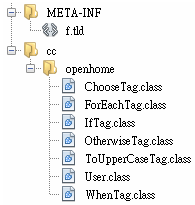

|
|
你可以將TLD檔案直接放在Web應用程式的WEB-INF資料夾或其子資料夾中，容器會在WEB-INF資料夾或子資料夾中找到TLD檔案並載入。如果要用JAR檔案來封裝自訂標籤處理器與TLD檔案，則與 Tag File TLD 檔案 說明的方式類似，不過這次TLD檔案不一定要放在JAR檔案的META-INF/TLDS資料夾中，而只要是在JAR檔案的META-INF資料夾或子資料夾即可。也就是：
例如，可以將所開發的Simple Tag如下放置在一個fake資料夾中：  接著在文字模式中進入fake資料夾，執行以下的指令： jar cvf ../fake.jar *
如此在fake資料夾上一層目錄中，就會產生fake.jar檔案，若想使用這個fake.jar，只要將之置入WEB-INF/lib中，就可以開始使用自訂的標籤庫。 |